Des
mondes à explorer, album après album.
Des
mondes à explorer, album après album.Aller au contenu M'Art Éditions Menu AccueilCollectionAlbumsPersonnagesContact
M'Art Éditions présente
Vert Singe & Torix : la BD d'aventure, d'humour et d'amitié pour tous les explorateurs dès 7 ans.
Partir à l'aventureExplorer les albums →
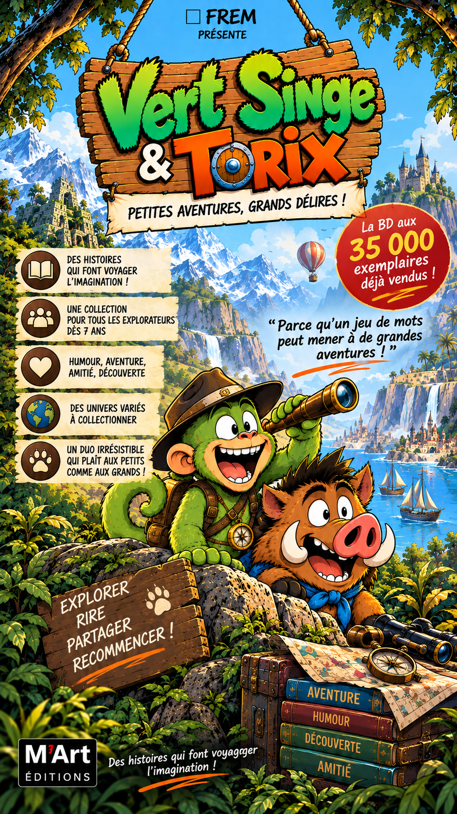
35 000La collection phare
Parce qu'un jeu de mots peut mener à de grandes aventures !
Vert Singe a toujours une idée à la minute. Torix, son fidèle compagnon sanglier, est prêt à le suivre — même quand le plan semble un peu risqué. Ensemble, ils voyagent dans des univers hauts en couleur.
Une collection pour rire, rêver et partager en famille.
Des
mondes à explorer, album après album.
À collectionner
Chaque aventure est une invitation à ouvrir grand les yeux.
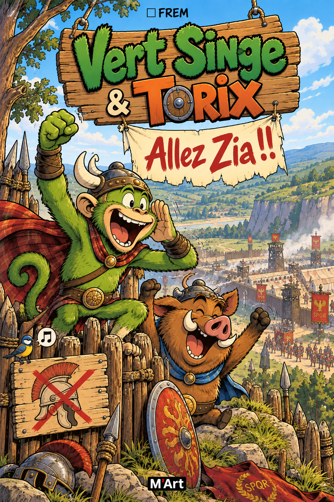
Tome 1
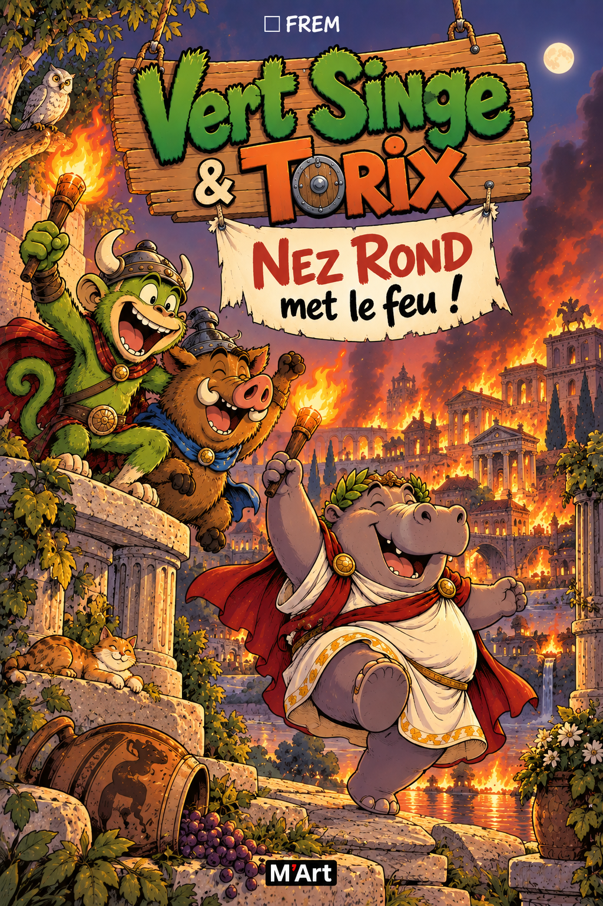
Tome 2
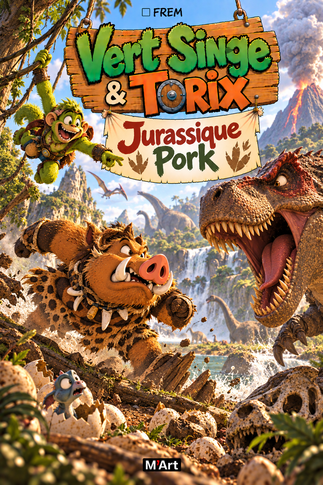
Tome 3
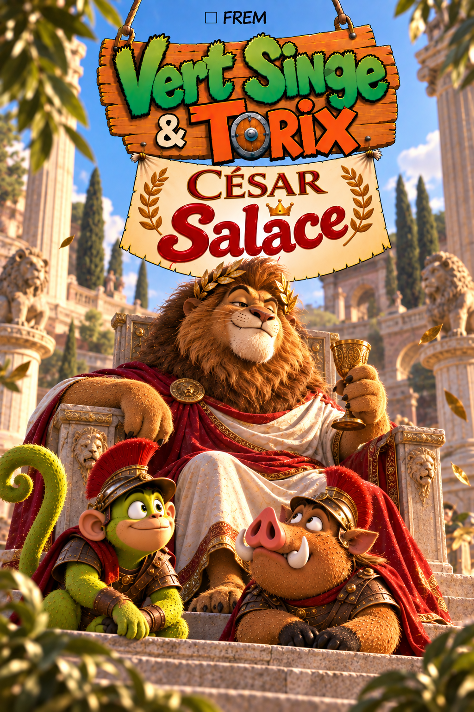
Tome 4
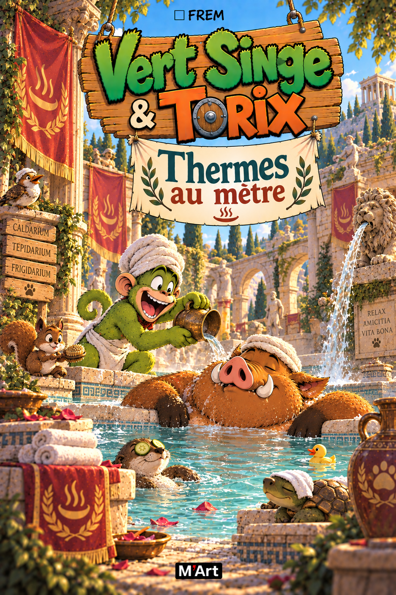
Tome 5
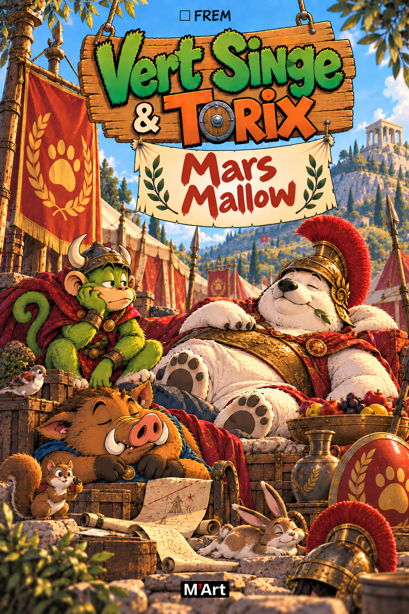
Tome 6
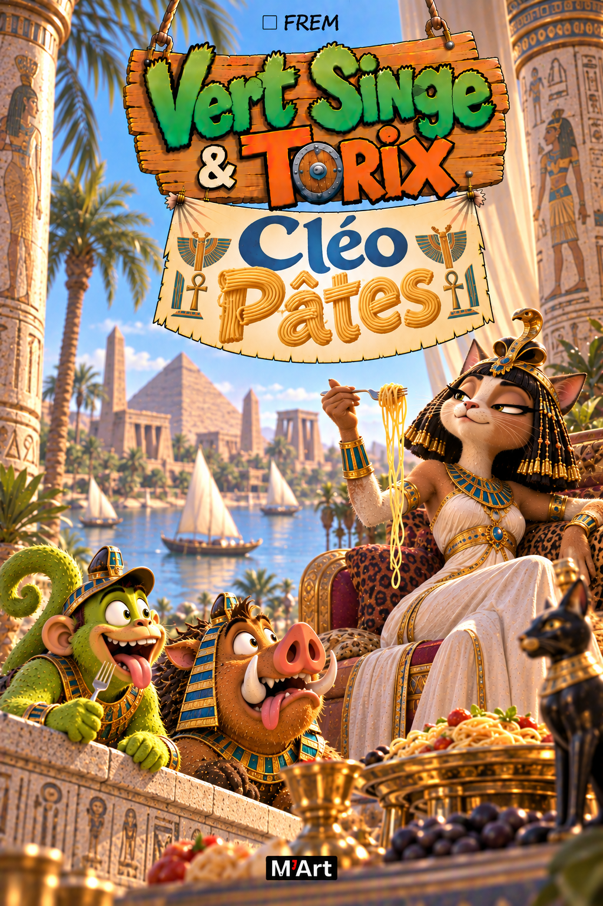
Tome 7
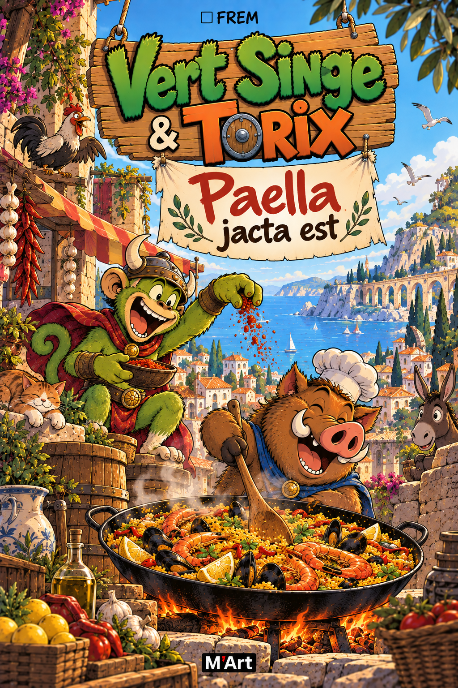
Tome 8
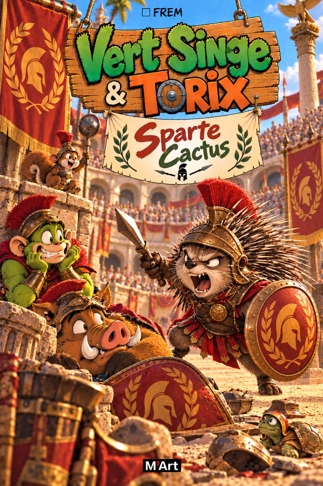
Tome 9
Tome 10
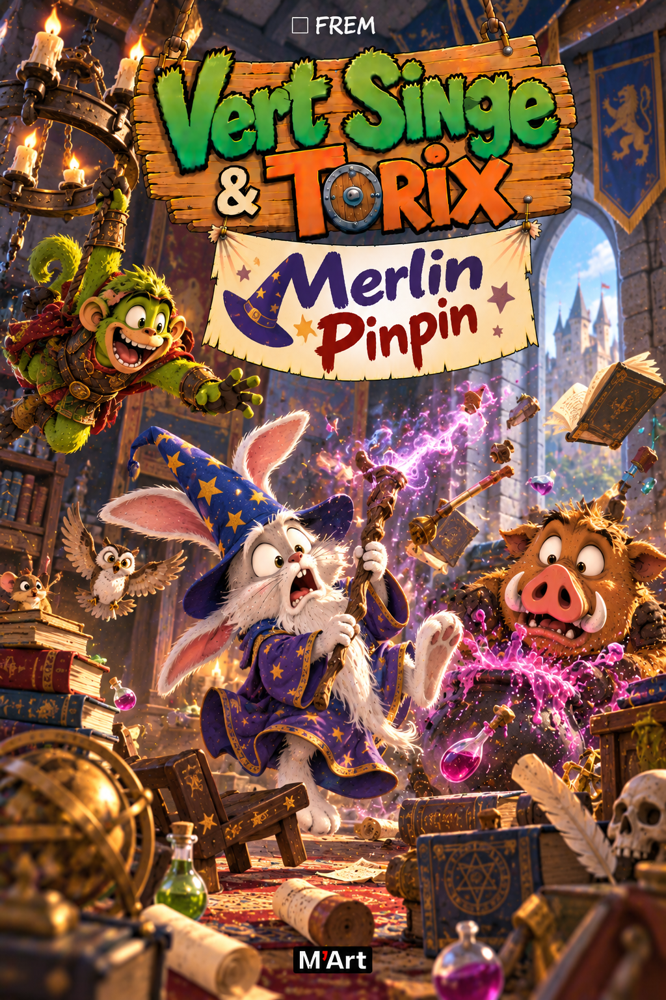
Tome 11
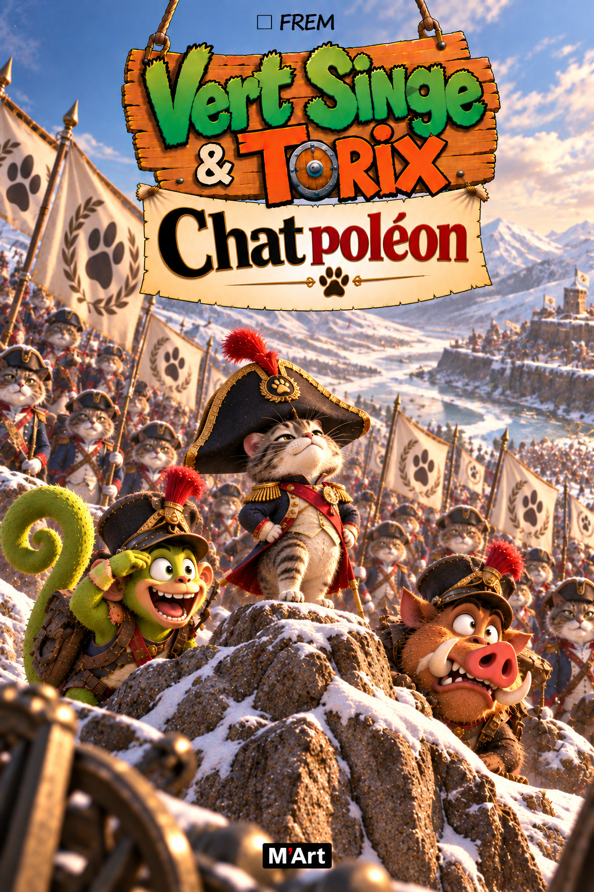
Tome 12
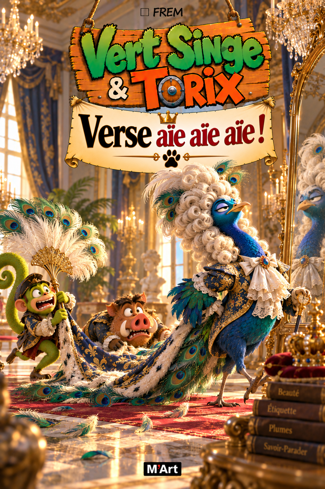
Tome 13
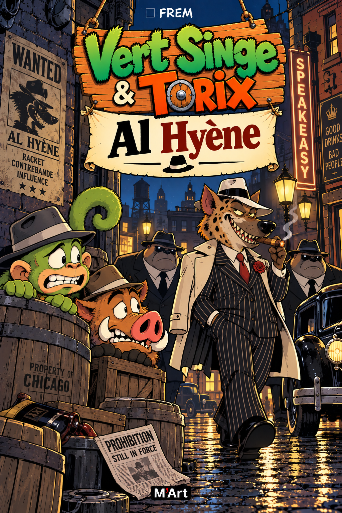
Tome 14
Les inséparables
●
Curieux, fougueux, toujours partant. Il a une idée à la minute — et rarement le temps d'attendre.
▲
Prudent, attentif et très drôle. Il aime les bons plans, les biscuits et les grandes questions.
Pour ne rien manquer
Retrouvez toutes les aventures de Vert Singe & Torix dans notre catalogue.
Des albums pour imaginer,
rêver et s'émerveiller.
Nous écrire
Explorer
La collectionLes albumsLes personnages
© M'Art Éditions 2026Avec beaucoup d'imagination.